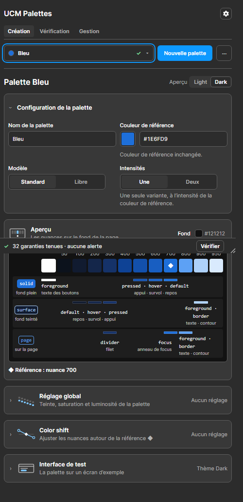

Constat R7 de la recette v8 : à l'ouverture d'une palette, la carte « Configuration de la palette » montre Modèle, Intensités et le choix « Référence exacte dans ». Ces réglages servent rarement. La page montre l'écran actuel, capturé dans la galerie à 500 px, puis la carte repliée dans trois cas.
Aujourd'hui

Ce qui gêne
Modèle et Intensités prennent une rangée entière avant l'aperçu, pour des choix faits une fois.
À deux intensités, « Référence exacte dans » ajoute une rangée de plus.
L'aperçu, que le designer regarde le plus, descend sous la ligne de flottaison à 520 px de haut.
A. Repliée, réglages par défaut
Palette Bleu LightDark
⌄ Configuration de la palette
Bleu
#1E6FD9
Couleur de référence inchangée.
› Réglages avancésStandard, une intensité
Ce qui change
La carte garde le nom et la couleur de référence.
Modèle, Intensités et « Référence exacte dans » passent sous « Réglages avancés », replié à l'ouverture d'une palette.
Le résumé, à droite, dit les valeurs en cours dans les mots des choix.
Pour
La carte perd une rangée et demie ; l'aperçu remonte d'autant.
B. Repliée, un réglage avancé changé
Palette Ardoise LightDark
⌄ Configuration de la palette
Ardoise
#64748B
› Réglages avancésModèle libre, deux intensités · référence dans Soft
Ce qui change
Quand un réglage avancé diffère de sa valeur par défaut (Standard, une intensité, Auto), le résumé le nomme et prend la couleur d'attention.
Le dépliant reste replié : le résumé suffit pour savoir que la palette sort de l'ordinaire.
Variante écartée
Déplier d'office dans ce cas : la carte changerait de hauteur d'une palette à l'autre, et l'aperçu sauterait.
C. Dépliée
Palette Ardoise LightDark
⌄ Configuration de la palette
Ardoise
#64748B
⌄ Réglages avancésModèle libre, deux intensités · référence dans Soft
StandardLibre
UneDeux
AutoSoftVivid
Ce qui change
Déplié, le corps montre les mêmes contrôles qu'aujourd'hui, à la même place relative.
L'état du dépliant est retenu pour la session, comme celui des cartes Réglage global et Color shift.
À décider
Le libellé « Réglages avancés », ou « Modèle et intensités », plus concret.
Recommandation
Les cas A, B et C forment une seule proposition : un dépliant replié à l'ouverture, avec un résumé qui signale un réglage changé. Elle ne retire aucun contrôle et ne change aucune règle ; seule la place des trois réglages change.